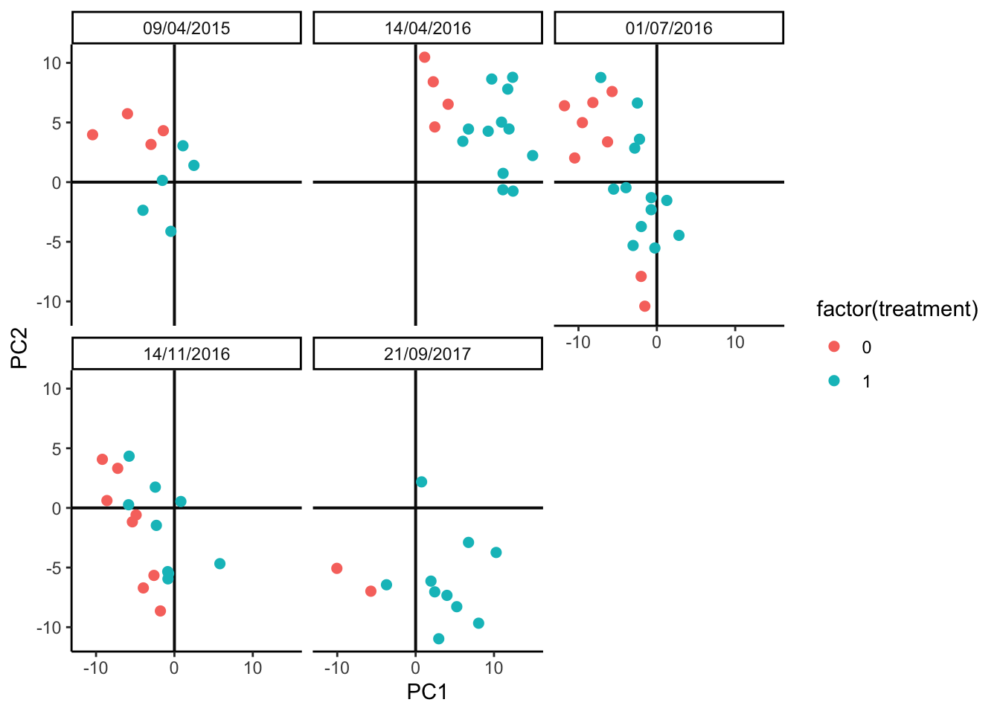

5.2 Simulation Design
The block below estimates a candidate simulator. By using the formula ~ batch + treatment, we’re allowing for taxon-wise differences due to batch and
treatment. Note that in principle, we could estimate an interaction between
batch and treatment (the treatment could appear stronger in some batches than
others). I encourage you to try estimating that model; however, visually
analyzing the output suggests that this full model has a tendancy to overfit.
Since the data have already been centered log-ratio transformed, we can try out
a Gaussian marginal model. The AD dataset has relatively few samples
compared to the number of features, so we’ll use a copula that’s designed for
this setting.
simulator <- setup_simulator(
anaerobic,
~ batch + treatment,
~ GaussianLSS(),
copula = copula_adaptive(thr = .1)
) |>
estimate(nu = 0.05, mstop = 100) # lower nu -> stable trainingWe can simulate from the fitted model and evaluate the quality of our fit using
contrast_boxplot. This is a light wrapper of the ggplot2 code we used to
compare experiments from our first session, and you can read its definition
here.

Exercise Propose and create at least one other visualization that can be used to compare and contrast the simulator with real data. What conclusions can you draw?
Solution: There are many possible answers:
- Boxplots across taxa with different overall abundance levels.
- Analogous histograms or CDF plots, to show the entire distributions, rather than just summarized quantiles.
- Pair scatterplots, to see how well the bivariate relationships between taxa are preserved.
- Dimensionality reduction on the simulated data, to see how well it matches global structure in the original data.
We’ll implement the last idea using PCA. This should be contrasted with the PCA plot on the original data above. It’s okay if the plot seems rotated relative to the oiginal plot – PCA is only unique up to rotation. The main characteristic we’re looking for is that the relative sizes of the batch and treatment effects seem reasonaly well-preserved, since these will be the types of effects that our later batch effect integration methods must be able to distinguish.
 :::
To study the risk for overintegration, let’s imagine that there were a third
treatment group with relatively fewer samples. This is the type of group that a
correction method might accidentally blend in with the rest, if it’s too
aggressive. We’ve defined the imaginary experiment using the data.frame below.
The treatment level 1.8 is the new one. We’ve supposed there are between 1 -
3 technical replicates (extraction) for each biological sample (sample), and
the batch dates are the same as before.
## extraction batch treatment rep sample
## Min. :1 09/04/2015:36 Min. :0.0000 Min. :1.00 1 : 2
## 1st Qu.:1 14/04/2016:36 1st Qu.:0.0000 1st Qu.:1.75 2 : 2
## Median :2 01/07/2016:36 Median :1.0000 Median :2.50 3 : 2
## Mean :2 14/11/2016:36 Mean :0.7167 Mean :2.75 4 : 2
## 3rd Qu.:3 21/09/2017:36 3rd Qu.:1.0000 3rd Qu.:4.00 5 : 2
## Max. :3 Max. :1.8000 Max. :5.00 6 : 2
## (Other):168We can simulate from the new design and look at how different this new treatment group seems from the others. It’s a subtle effect, definitely smaller than the batch effect, but also separate enough that we should be able to preserve it.